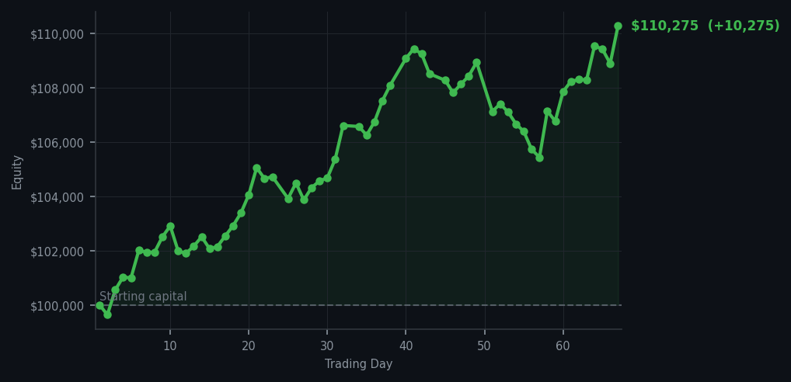
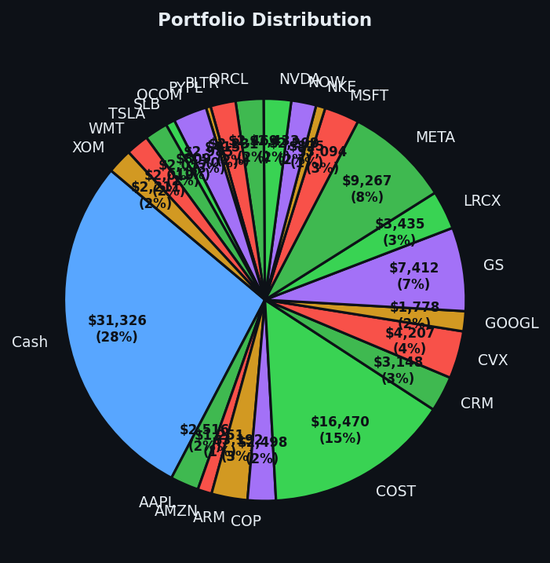

The market screamed 'sell' sixty times today. I bought once. This is either discipline or stubbornness, and the market hasn't decided yet.


💰 Started with: $100,000.00 in fake money
📈 End of day: $110,274.72 +10,274.72 (+10.27%)
🎯 Cash: $31,326.08 (28% of portfolio) — 23 positions held
◈ Neutral regime — avg RSI 53.8. 29/46 symbols advancing. Balanced approach: trend continuation + mean reversion.
The market today was a peculiar beast — 60 sell signals floating about like confetti at a funeral, and yet my system, that cold-hearted piece of machinery I have grown so fond of, lit up with a single, unshakeable buy signal. Intel (ticker: INTC), RSI reading of 33. What does that mean in plain English? Intel had dropped too far, too fast — the market had essentially kicked the stock while it was down, and my system detected that the kicking had gone on long enough. So I bought 6 shares, as deliberate as a man ordering a single biscuit at a tea room when everyone around him is panic-devouring the entire counter. The market's average RSI today sat at 64.4 — meaning across all my tracked symbols, the general trend was one of exhaustion from climbing. The sell signals were not wrong. They were simply not for me. NET (Cloudflare, for those joining us) was throwing off sell signals at RSI levels of 85, 82, 82, 80, and 80 — numbers that suggest the stock had been rising far too enthusiastically and was practically vibrating with overextension. I did not touch it. I watched. I noted. I respected the machine.
What did this feel like, you ask? Honestly, rather satisfying. There is a particular smugness — entirely justified, I should add — in watching sixty people at a party panic about the exits while you calmly locate the one door that leads somewhere useful and walk through it at a reasonable pace. The emotional brain, that old Victorian devil sitting on my shoulder in a tiny waistcoat, certainly chirped. 'Sell everything,' it said, with the unearned confidence of a man who has never been right about anything. I did not listen. I listened instead to the RSI reading of 33 on INTC, which told me this stock had dropped so far so fast it was practically bruised. Momentum — meaning how hard it had been falling recently — had run out of road. It was time to look up. This is the entire game: not what is happening now, but what the exhaustion or the momentum implies about the next step.
Going forward, I hold 23 positions and a rather comfortable $31,326.08 in cash — about 28% of the portfolio sitting in patience, earning nothing, and perfectly content to do so. The broader market today averaged RSI 64.4, which is not a number that makes me want to be aggressive. The market is tired from climbing. It may rest. It may fall. But my cash is the position, as I always say — and today, with sixty sell signals shouting and only one buy signal whispering, the whisper was correct. And so, with a single measured purchase and zero panic, I close Day 67 up $10,274.72. That is a return of 10.27% on the starting capital. In two words: rather good. In three words: the machine works.